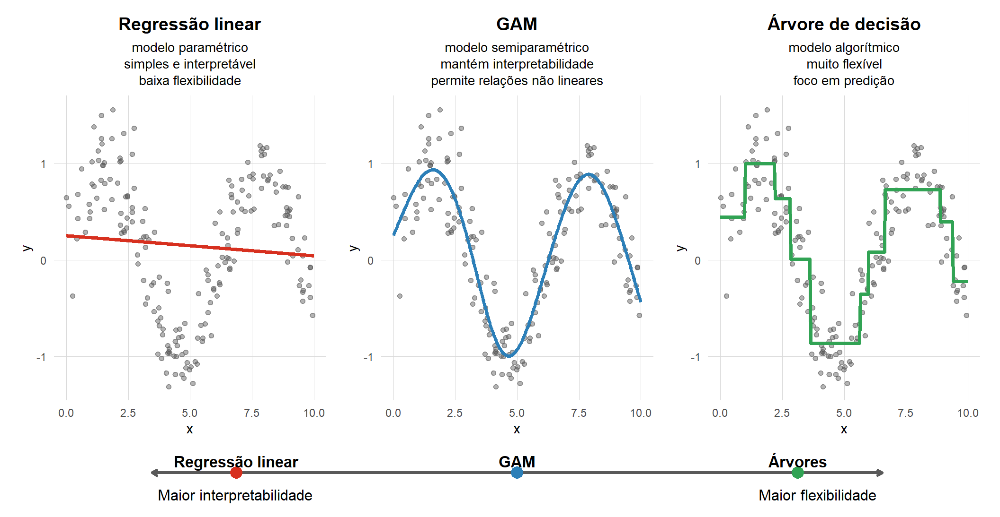
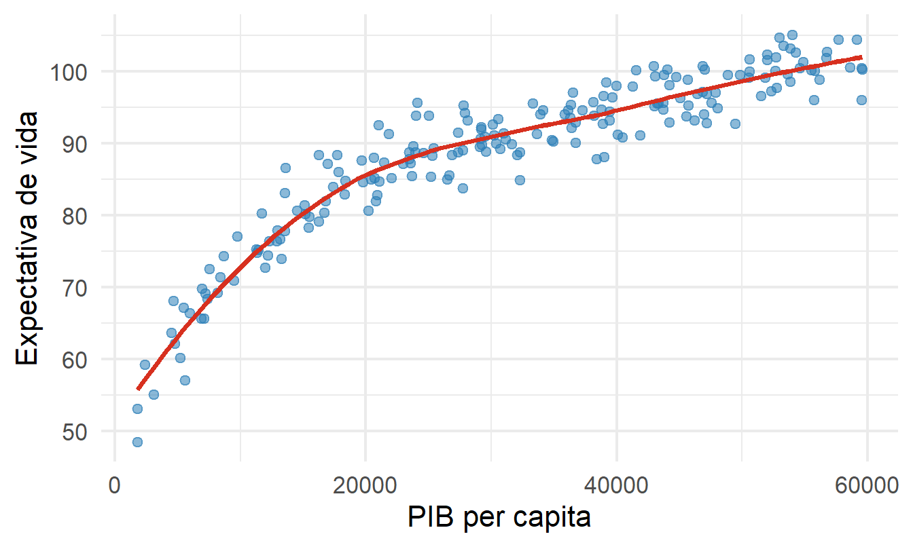
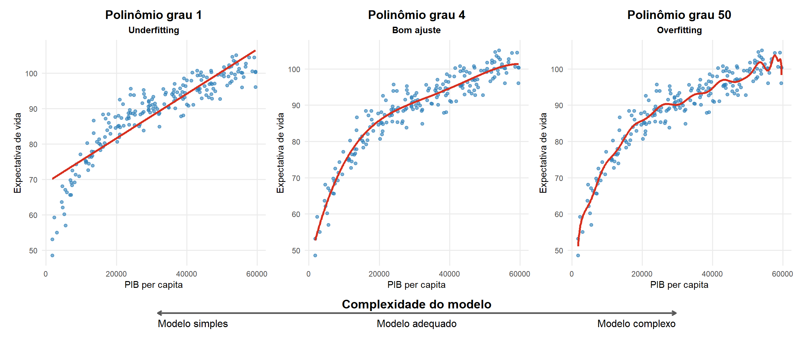
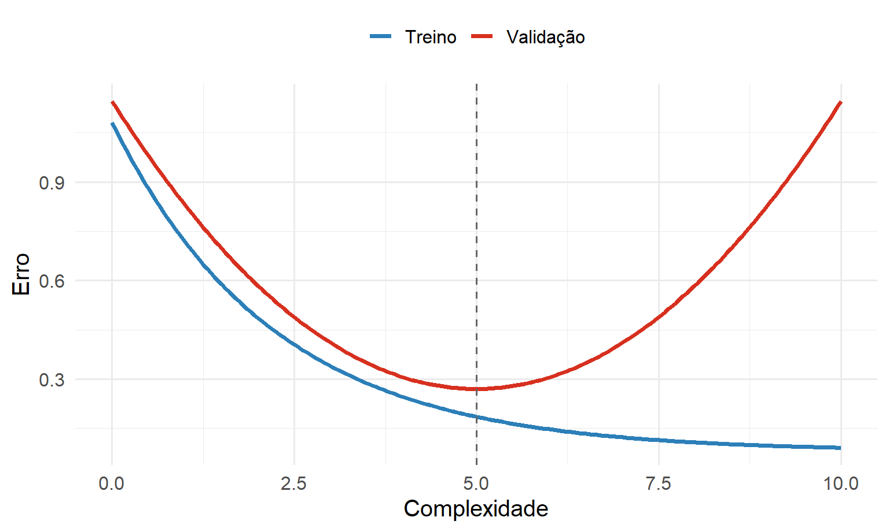
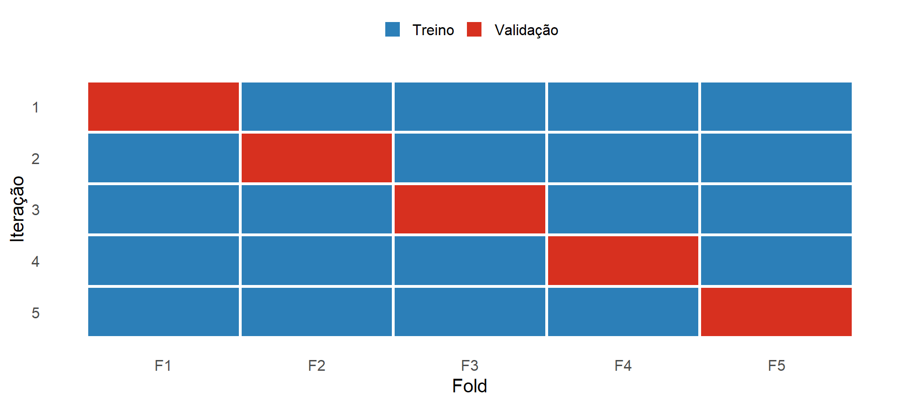
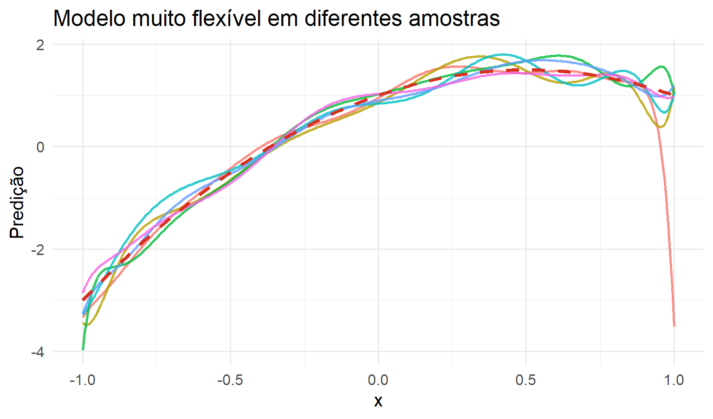
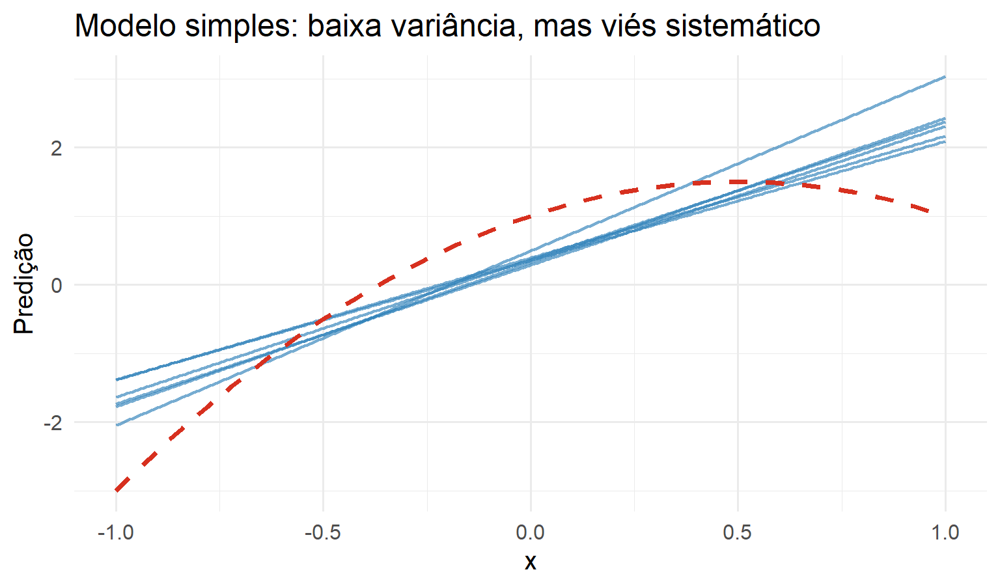
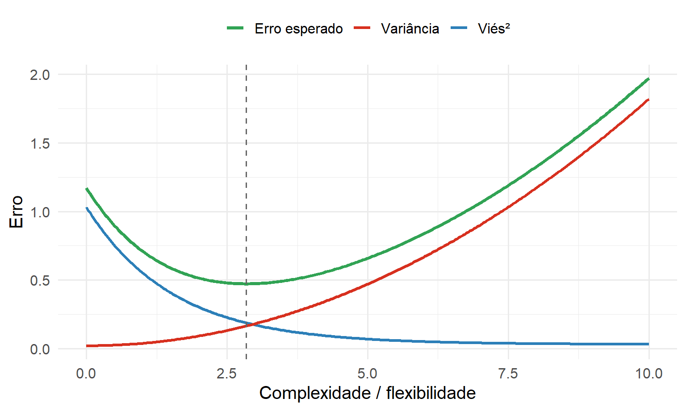

Parte I : Aprendizado Supervisionado
Fundamentos do Aprendizado Estatístico
Aprendizado estatístico supervisionado
O problema fundamental
Considere uma amostra observada
\[ \mathcal D_n=\{(X_1,Y_1),\ldots,(X_n,Y_n)\} \]
A pergunta central é:
Como construir, a partir dos dados observados, uma função capaz de prever \(Y\) para uma nova observação \(X\)?
\[ \boxed{\text{Dados}}\longrightarrow \boxed{\text{Algoritmo}}\longrightarrow \boxed{\hat g(x)}\longrightarrow \boxed{\text{Predição}} \]
Programação tradicional vs. aprendizado de máquina
Programação tradicional
\[ \text{Entrada}+\text{Regras}\longrightarrow\text{Saída} \]
As regras são especificadas pelo programador.
Aprendizado de máquina
\[ \text{Entrada}+\text{Saída}\longrightarrow\text{Algoritmo}\longrightarrow\text{Modelo} \]
Parte das regras é aprendida a partir dos dados.
O que significa “aprender”?
Segundo a formulação clássica de Mitchell, um sistema aprende a partir de uma experiência \(E\), para uma tarefa \(T\), segundo uma medida de desempenho \(P\), quando seu desempenho melhora com a experiência.
Tarefa (\(T\))
Prever o preço de um imóvel.
Experiência (\(E\))
Histórico de imóveis observados.
Desempenho (\(P\))
RMSE em novas observações.
Diferentes tipos de aprendizado
| Tipo | Informação disponível | Exemplos |
|---|---|---|
| Supervisionado | \((X,Y)\) | regressão, classificação |
| Não supervisionado | \(X\) | clustering, PCA |
| Por reforço | estado, ação e recompensa | decisões sequenciais |
Nesta Parte I, estudaremos aprendizado supervisionado, tratando regressão e classificação em paralelo.
Aprendizado supervisionado
Notação
Dispomos de observações
\[ \mathcal D_n = \{(\mathbf X_1,Y_1),\ldots,(\mathbf X_n,Y_n)\} \]
em que
\[ \mathbf X_i\in\mathcal X \qquad\text{e}\qquad Y_i\in\mathcal Y \]
Queremos aprender uma função de decisão ou predição
\[ \boxed{ g:\mathcal X\rightarrow\mathcal A } \]
A forma de \(\mathcal Y\), a ação \(\mathcal A\) e a função de perda determinam o problema de aprendizado
Dois tipos de resposta
Regressão
\[ Y\in\mathbb R \] Resposta quantitativa
Classificação
\[ Y\in\{1,\ldots,K\} \] Resposta categórica
Predição vs. inferência
Inferência
- Quais variáveis estão associadas a \(Y\)?
- Como \(Y\) muda quando \(X\) muda?
- Qual estrutura explica os dados?
Predição
- Qual será o valor de \(Y\) para uma nova observação?
- O modelo generaliza para dados não vistos?
- Qual modelo produz menor erro preditivo?
Duas culturas em modelagem estatística
Breiman (2001) descreve duas tradições complementares:
Data Modeling Culture
- ênfase em inferência;
- interpretação dos parâmetros;
- suposições probabilísticas explícitas.
Algorithmic Modeling Culture
- ênfase em predição;
- desempenho em novos dados;
- modelos potencialmente muito flexíveis.
Interpretabilidade vs. flexibilidade

\[ \text{Maior interpretabilidade} \quad\longleftrightarrow\quad \text{Maior flexibilidade} \]
Síntese
\[ \boxed{r(x)=\mathbb E[Y\mid X=x]} \]
\[ \boxed{\hat g(x)\approx r(x)} \]
Agora surge a pergunta:
Como definir matematicamente o que significa uma boa previsão?
Função de perda e função de risco
Quanto custa errar?
Suponha que o valor observado seja
\[ Y=80 \]
Dois modelos produzem
\[ \hat Y_A=79, \qquad \hat Y_B=65 \]
Precisamos de uma regra que atribua um custo ao erro de predição.
Função de perda
Uma função de perda é denotada por
\[ L(Y,g(X)) \]
Ela mede o custo associado à previsão \(g(X)\) quando o valor observado é \(Y\).
Perda quadrática
\[ \boxed{L(Y,g(X))=(Y-g(X))^2} \]
Características:
- penaliza erros grandes de forma acentuada;
- está associada à média condicional;
- conduz ao MSE/RMSE na avaliação empírica.
Perda absoluta
\[ \boxed{L(Y,g(X))=|Y-g(X)|} \]
| Perda | Preditor ótimo |
|---|---|
| quadrática | média condicional |
| absoluta | mediana condicional |
A escolha da função de perda ajuda a determinar o que o algoritmo aprende.
Da perda ao risco
A perda avalia uma previsão. O risco avalia o desempenho médio do modelo em novas observações:
\[ \boxed{R(g)=\mathbb E[L(Y,g(X))]} \]
A perda depende da tarefa
Regressão
\[ L(y,a)=(y-a)^2 \]
Classificação
\[ \boxed{L(y,a)=I\{y\neq a\}} \] Em ambos os casos \[ \boxed{R(g)=E[L(Y,g(\mathbf X))]} \]
Risco quadrático
Para regressão com perda quadrática,
\[ R(g) = E[(Y-g(X))^2] \]
o minimizador populacional é
\[ \boxed{ r(x)=E(Y\mid X=x) } \]
Esse resultado explica por que a média condicional é o alvo natural da regressão
Decomposição do erro
Escrevendo
\[ Y=r(X)+\varepsilon, \qquad E(\varepsilon\mid X)=0 \]
temos
\[ \boxed{ E[(Y-\widehat g(X))^2] = E[(r(X)-\widehat g(X))^2] + E(\varepsilon^2) } \]
O primeiro termo depende do estimador
O segundo é o erro irredutível
O melhor modelo também erra
Mesmo que
\[ g(x)=r(x), \]
ainda teremos
\[
R(g)=\mathbb E[\operatorname{Var}(Y\mid X)]
\]
Nem todo erro de predição é consequência de um modelo ruim.
O modelo estimado depende dos dados
Um algoritmo de aprendizagem pode ser representado por
\[ \mathcal D_n \overset{\mathcal A}{\longrightarrow} \hat g_{\mathcal D_n} \]
Se mudarmos a amostra, podemos obter outro modelo:
\[ \mathcal D_1\to\hat g_1, \qquad \mathcal D_2\to\hat g_2, \qquad \mathcal D_3\to\hat g_3 \]
Essa ideia será fundamental para compreender variância do estimador.
Síntese
\[ \boxed{\text{Dados}} \rightarrow \boxed{\hat g} \rightarrow \boxed{L} \rightarrow \boxed{R(g)} \]
Mas há um problema:
\[ \boxed{R(g)\text{ é desconhecido}} \]
Como estimar o erro que o modelo terá em dados ainda não observados?
Generalização e seleção de modelos
Exemplo: PIB e expectativa de vida
Considere
- \(X\): PIB per capita;
- \(Y\): expectativa de vida.
Queremos estimar
\[ r(x)=\mathbb E[Y\mid X=x] \]
Qual é a expectativa de vida média esperada para um país com PIB per capita igual a \(x\)?
R: PIB e expectativa de vida

Um modelo simples
Um primeiro candidato é
\[ g(x)=\beta_0+\beta_1x \]
Pergunta:
O modelo é flexível o suficiente para representar a relação entre \(X\) e \(Y\)?
Três candidatos
Considere modelos polinomiais com
\[ p=1, \qquad p=4, \qquad p=50 \]

Sub-ajuste (underfitting)
Um modelo muito simples pode apresentar
\[ \text{alto viés} \quad\Rightarrow\quad \text{estrutura relevante não capturada} \]
Exemplo: polinômio de grau \(1\) quando a relação é fortemente não linear.
Super-ajuste (overfitting)
Um modelo excessivamente flexível pode ajustar características específicas da amostra:
\[ \text{erro de treino muito baixo} \quad\not\Rightarrow\quad \text{boa generalização} \]
O paradoxo do treinamento
Em geral, quando aumentamos a complexidade,
\[ \text{complexidade}\uparrow \quad\Rightarrow\quad \widehat R_{\text{treino}}\downarrow \]
Então por que não escolher sempre o modelo mais complexo?
Treino não é generalização
\[ \boxed{ \text{Bom ajuste aos dados observados} \neq \text{Boa predição em novos dados} } \]
Precisamos estimar o desempenho fora da amostra usada no ajuste.
Data splitting
Uma divisão simples separa os dados em
\[ \boxed{\text{Treino}} \qquad \boxed{\text{Validação}} \]
- Treino: estima os parâmetros do modelo;
- Validação: estima o desempenho em dados não usados no ajuste.
Erro de validação
Para um conjunto de validação \(V\),
\[ \widehat R_{\text{val}} = \frac{1}{|V|} \sum_{i\in V} (Y_i-\hat g(X_i))^2 \]
Complexidade: treino vs. validação
Com o aumento da complexidade:
- erro de treinamento tende a diminuir;
- erro de validação pode inicialmente diminuir e depois aumentar.

Ideia central: selecionar a complexidade pelo desempenho fora da amostra.
Podemos superajustar a validação
Se avaliarmos repetidamente muitas decisões usando o mesmo conjunto de validação, podemos adaptar nossas escolhas a ele.
Por isso, distinguimos:
\[ \text{Treino} \neq \text{Validação} \neq \text{Teste} \]
Treino, validação e teste
| Conjunto | Finalidade |
|---|---|
| Treino | estimar parâmetros |
| Validação | selecionar modelo / hiperparâmetros |
| Teste | avaliação final |
O conjunto de teste não deve participar das decisões de modelagem.
O problema de uma única divisão
Uma única divisão treino/validação:
- depende da divisão aleatória escolhida;
- utiliza apenas parte da amostra para treinamento;
- pode produzir estimativas instáveis do desempenho.
Uma alternativa é a validação cruzada.
\(k\)-fold cross-validation
Dividimos os dados em \(k\) subconjuntos aproximadamente do mesmo tamanho:
\[ D=F_1\cup\cdots\cup F_k \]
Cada fold funciona uma vez como validação; os demais são usados para treinamento.

Estimativa do risco por CV
\[ \widehat R_{CV} = \frac{1}{n} \sum_{j=1}^{k} \sum_{i\in F_j} \left(Y_i-\hat g_{-j}(X_i)\right)^2 \]
Aqui, \(\hat g_{-j}\) é ajustado sem usar as observações do fold \(F_j\).
Data leakage
Incorreto
\[ \text{Pré-processar todos os dados} \longrightarrow \text{CV} \]
Correto
\[ \text{Em cada fold:} \quad \text{estimar pré-processamento no treino} \longrightarrow \text{aplicar na validação} \]
Informação do conjunto de validação não deve influenciar o treinamento.
Síntese
\[ \boxed{ \text{Treinar} \neq \text{Selecionar} \neq \text{Avaliar} } \]
Como a complexidade do modelo afeta seu erro de generalização?
Complexidade, viés, variância e tuning
Por que modelos muito flexíveis são instáveis?
Imagine várias amostras independentes provenientes da mesma população.
Um modelo muito flexível pode produzir curvas bastante diferentes em cada amostra.
Essa sensibilidade aos dados é chamada variância.

O outro extremo: modelos simples
Modelos muito simples podem variar pouco entre amostras, mas errar sistematicamente a forma de \(r(x)\).
Esse erro sistemático é chamado viés.

Viés
Para um ponto \(x\),
\[ \operatorname{Bias}[\hat g(x)] = \mathbb E[\hat g(x)]-r(x) \]
Interpretação:
quanto a previsão média do procedimento de aprendizagem se afasta sistematicamente da função verdadeira.
Variância
\[ \operatorname{Var}[\hat g(x)] \]
Interpretação:
quanto o modelo estimado muda quando utilizamos uma nova amostra de treinamento.
Decomposição viés–variância
Sob perda quadrática,
\[
\boxed{
\mathbb E[(Y-\hat g(x))^2]
=
\sigma^2(x)
+
\operatorname{Bias}^2[\hat g(x)]
+
\operatorname{Var}[\hat g(x)]
}
\]
Interpretação
| Componente | Significado |
|---|---|
| \(\sigma^2(x)\) | ruído irreduzível |
| \(\operatorname{Bias}^2\) | erro sistemático |
| \(\operatorname{Var}\) | sensibilidade à amostra |
Trade-off viés–variância
Em geral,
\[ \text{complexidade}\uparrow \Rightarrow \begin{cases} \text{viés}\downarrow\\ \text{variância}\uparrow \end{cases} \]
O objetivo é encontrar um compromisso que minimize o erro de generalização.

Voltando aos polinômios
| Modelo | Viés | Variância |
|---|---|---|
| grau \(1\) | alto | baixa |
| grau \(4\) | moderado | moderada |
| grau \(50\) | baixo | alta |
O melhor modelo não é necessariamente o mais simples nem o mais flexível.
Parâmetro vs. hiperparâmetro
Parâmetros
Exemplo:
\[ \beta_0,\beta_1,\ldots,\beta_p \]
São estimados no conjunto de treinamento.
Hiperparâmetro
Exemplo:
\[ p=\text{grau do polinômio} \]
Controla a estrutura/complexidade e é escolhido por validação.
A mesma ideia aparecerá em todo o curso
| Método | Controle de complexidade |
|---|---|
| Regressão polinomial | grau \(p\) |
| Ridge/Lasso | \(\lambda\) |
| KNN | \(k\) |
| Kernel | bandwidth \(h\) |
| Árvore | profundidade / poda |
| Random Forest | mtry |
| Boosting | profundidade, learning rate, nº de árvores, |
Os algoritmos mudam; o problema estatístico de controlar a complexidade permanece.
Tuning
Se \(\theta\) representa um hiperparâmetro,
\[ \boxed{ \hat\theta = \arg\min_{\theta} \widehat R_{CV}(\theta) } \]
O ajuste de hiperparâmetros deve ser feito sem usar o conjunto de teste.

Cinco perguntas para o restante da disciplina
Qual função queremos aprender?
\[r(x)=\mathbb E[Y\mid X=x]\]Como medimos um erro?
\[L(Y,g(X))\]Como medimos a qualidade de um modelo?
\[R(g)=\mathbb E[L(Y,g(X))]\]
Cinco perguntas para o restante da disciplina
Como estimamos o desempenho em novos dados?
\[\text{Validação / cross-validation}\]Como controlamos a complexidade?
\[\text{Tuning / regularização}\]
Referências
EST335 — Semana 1